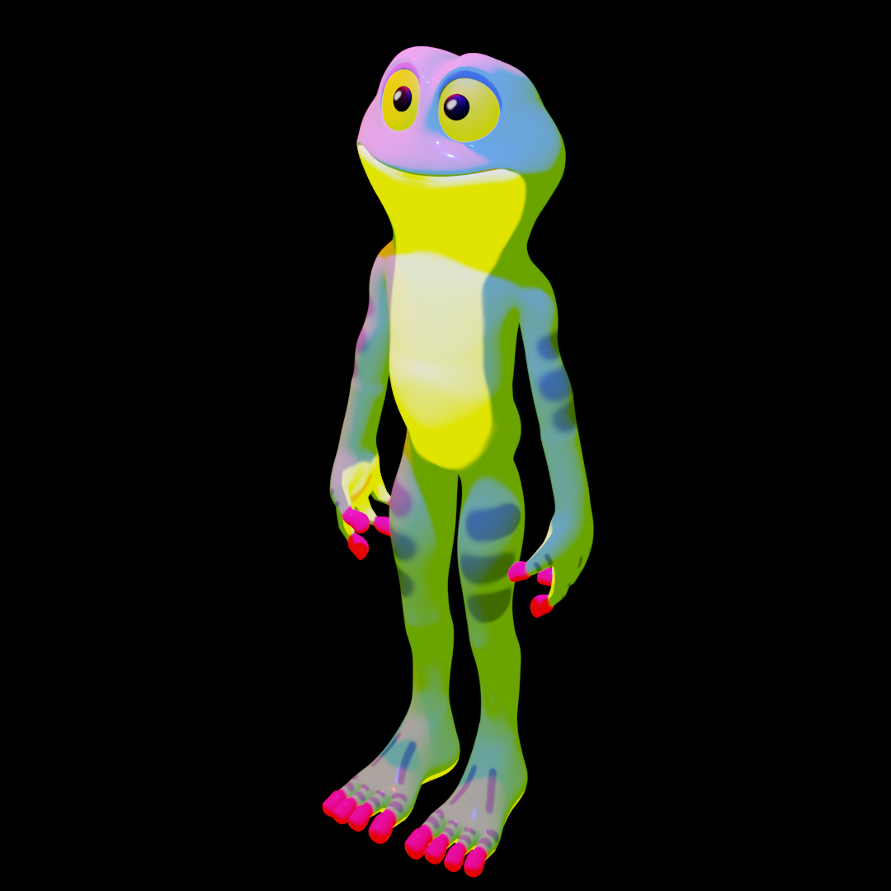

Ranita
Ranita comparte el mismo espíritu experimental que Cocodrino, ya que también fue creado como parte del proceso de desarrollo de la serie web. Siguiendo los mismos principios estéticos de Los chicos malos, este modelado explora las posibilidades narrativas y visuales que los shaders pueden ofrecer dentro de un mundo animado. A través de este personaje, se amplía el universo de la serie, manteniendo un enfoque en la textura y el estilo lúdico propio del cine de animación.
